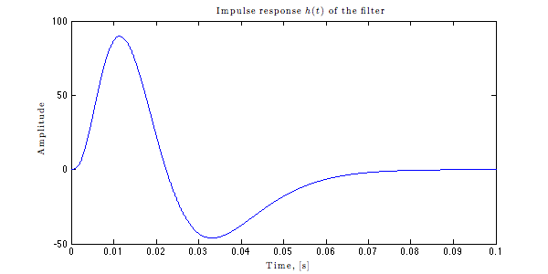
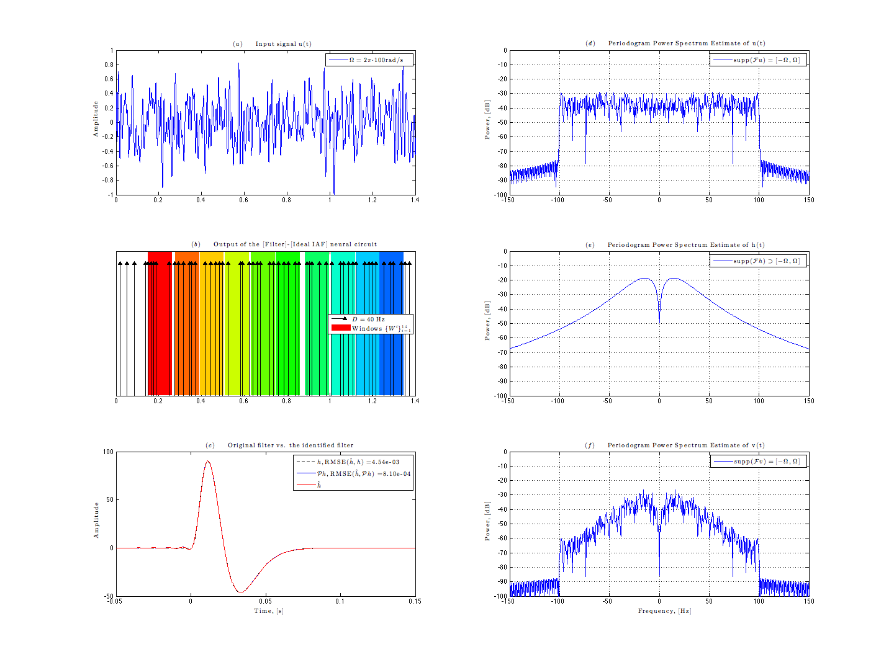

Identifying Dendritic Processing in a [Filter]-[Ideal IAF] neural circuit
This demo illustrates identification of the [Filter] in the [Filter]-[Ideal IAF] circuit using band-limited input signals, i.e., signals that belong to the Paley-Wiener space.
The code below corresponds to Corollary 3 in [1] and was used to generate Figs. 4-6 in [1]. The employed filter was taken from [2].
Author: Yevgeniy B. Slutskiy ys2146@columbia.edu
Revision Author: Chung-Heng Yeh chyeh@ee.columbia.edu
Bionet Group, Columbia University
Copyright 2010-2012 Yevgeniy B. Slutskiy and Chung-Heng Yeh
Contents
- Initialize the demo
- Specify the filter h to be used
- Create a band-limited stimulus. The bandwidth W = 2\pi*25 rad/s
- Compute the filter projection Ph
- Filter the input signal u
- Encode the filter output v=u*h with an IAF neuron
- Identify the filter projection Ph
- Generate Fig. 4 of [1]
- Generate Fig. 5 of [1]
- Generate Fig. 6 of [1]
- Reference
Initialize the demo
clc; clear all; close all; % reset the Matlab workspace set(0,'defaulttextinterpreter','latex'); % set default text interpreter to latex tic_demo = tic; % start the demo timer tic_init = tic; % start the initialization timer dt = 5e-6; % set the time step, [s] % define function handle for displaying running time runtime = @(msg,time) display([msg num2str(floor(time/60)) ''' ' ... num2str(time - 60*floor(time/60), '%3.1f') '"']);
Specify the filter h to be used
Generate a filter h according to Adelson and Bergen in [2]. h has a temporal support on the interval [T_1, T_2]. The filter generated here will be repeatedly used through this demo.
T_1 = 0; T_2 = 0.1; % specify T_1 and T_2 t_filt = T_1:dt:T_2; % set the length of the impulse response, [s] a = 200; % set the filter parameter h = 3*a*exp(-a*t_filt).*((a*t_filt).^3/... factorial(3)-(a*t_filt).^5/factorial(5));
Plot the filter
figure('Name','Filter','Position',[0 0 600 300],'color','white'); plot(t_filt, h); set(gca,'xlim',[0 0.1],'ylim',[-50 100],... 'xlabel',text('string','Time, [s]'),'ylabel',text('string','Amplitude'),... 'title',text('string','Impulse response $h(t)$ of the filter'));
Create a band-limited stimulus. The bandwidth W = 2\pi*25 rad/s
f = 25; % set the input signal bandwidth, [Hz] W = 2*pi*f; % calculate the bandwidth in [rad] Ts = pi/W; % calculate the sampling period in [s] t = 0:dt:1.12; % create a time vector for the input stimulus rng(19871127,'v5uniform'); % set the state of random number generator u = zeros(1,length(t)); % initialize the stimulus u(t) N_samp = floor((t(end)-t(1))/Ts); % find the number of stimulus samples ukT = randn(1,N_samp); % use randomly generated signal samples (e.g., from a Gaussian distribution) for k=1:N_samp u = u + ukT(k)*sinc(W*(t-k*Ts)/pi); % the first sample is zero end u = u/max(abs(u)); % normalize the input signal
Plot the stimulus
figure('Name','Input stimulus','Position',[0 0 600 300],'color','white'); plot(t, u); set(gca,'xlim',[0 1],'ylim',[-1 1],... 'xlabel',text('string','Time, [s]'),'ylabel',text('string','Amplitude'),... 'title',text('string','Input stimulus $u(t)$'));
Compute the filter projection Ph
Ph is the projection of h onto the input signal space. It is the best approximation of h that can be recovered.
t_Ph = t - (t(1)+t(end))/2; % get the time vector for Ph g = W/pi*sinc(W*t_Ph/pi); % calculate the sinc kernel g Ph = dt*fftfilt(h,g); % find the projection Ph by convolving h with g idx = find( abs(t_Ph+0.05) < dt/2 ):... find( abs(t_Ph-0.15) < dt/2 ); % need Ph only between [-0.05,0.15] t_Ph = t_Ph(idx); % truncate t_Ph Ph = Ph(idx); % truncate Ph h_long = zeros(size(t_Ph)); % set zero-padded version of h h_long( find(abs(t_Ph-t_filt(1))<dt/2):... find(abs(t_Ph-t_filt(end))<dt/2) ) = h;
figure('Name','Filter projection','Position',[0 0 600 300],'color','white'); plot(t_Ph,h_long,'--k',t_Ph, Ph,'b'); set(gca,'xlim',[0 0.1],'ylim',[-50 100],... 'xlabel',text('string','Time, [s]'),'ylabel',text('string','Amplitude'),... 'title',text('string','Filter $h(t)$ and Filter projection $\mathcal{P}h(t)$')); legend( '$h(t)$', '$\mathcal{P}h(t)$' );
Filter the input signal u
Since all signals are finite, the filter output v=u*h is not calculated properly on the boundaries. v_proper is that part of v, for which the convolution of u and h is computed correctly.
v = dt*fftfilt(h,u); % convolve u with h v_proper = v(length(h):end); % get the proper part of v t_proper = t(length(h):end); % get the corresponding time vector u_proper = u(length(h):end); % get the corresponding stimulus
Plot the filter output
figure('Name','Filter output v','Position',[0 0 600 300],'color','white'); plot(t,v); set(gca,'xlim',[0 1],'ylim',[-1.2 1.2],'xlabel',text('string','Time, [s]'),... 'ylabel',text('string','Amplitude'),'title',text('string','Filter output $v(t)$'));

Encode the filter output v=u*h with an IAF neuron
Specify parameters of the Ideal IAF neuron
delta = 0.007; % set the threshold bias = 0.28; % set the bias kappa = 1; % set the capacitance [spk_train vol_trace] = ideal_iaf_encode(v_proper,t_proper,bias,delta,kappa); timer = toc(tic_init); % get the initialization time runtime('Initialization time: ',timer); % display the initialization time
Initialization time: 0' 3.3"
Plot the voltage trace and the associated spike train
figure('Name','Neural circuit output','Position',[0 0 600 300],'color','white'); set(subplot(7,1,1:5),'xlim',[0 1],'ylim',[min(vol_trace) delta*1.1],'box','on',... 'xticklabel',[],'ylabel',text('string','Amplitude'),... 'title',text('string','Output of the [Filter]-[Ideal IAF] neural circuit')); hold on; plot([0 t_proper(end)-t_proper(1)], [delta delta], '--r',... t_proper-t_proper(1),vol_trace,'b-',... spk_train-t_proper(1), delta*ones(size(spk_train)),'ro','MarkerfaceColor','r'); legend(['Threshold $\delta=' num2str(delta) '$'],... 'Membrane voltage $v\qquad$', '$v(t)=\delta$', 'location','East'); set(subplot(7,1,6:7),'xlim',[0 1],'ylim',[0 1.1],'box','on',... 'yticklabel',[],'ytick',[],'xlabel',text('string','Time, [s]')); hold on; stem(spk_train-t_proper(1), ones(size(spk_train)), '^k', 'filled'); legend('$(t_k)_{k\in Z}$', 'location','East');

Identify the filter projection Ph
Since the temporal support of the filter h is not known, we identify the projection Ph in a window W = [tau_1, tau_2]. Temporal windows W^i of spikes can be chosen arbitrarily. Here we pick W^i so that the Nyquist-type condition on the density of spikes is achieved quickly (see also Theorem 1 and Remark 1 in [1]).
T_filt_rec = 0.12; % specify the hypothesized length of the implulse response tau_1 = -(T_filt_rec - t_filt(end))/2; % get tau_1 and tau_2. Here W is centered around the actual tau_2 = t_filt(end)-tau_1; % temporal support T_2-T_1 N_max = 10; % set the maximum number of windows to be used % (could be smaller depending on the simulation) tic_CIM = tic; % start the algorithm timer [h_hat windows] = identify_h_ideal_iaf(dt, t_Ph, t_proper, u_proper, W,... bias, delta, kappa,... spk_train, tau_1, tau_2, N_max); timer = toc(tic_CIM); % stop the algorithm timer runtime('CIM running time: ',timer); % display execution time
CIM running time: 0' 0.1"
Generate Fig. 4 of [1]
figure('Name','NIPS 2010 Fig. 4','Position',[0 0 1440 1080],'color','white') % plot the input stimulus u set(subplot(3,2,1),'xlim',[0 1],'ylim',[-1 1],'box','on',... 'ylabel',text('string','Amplitude'),... 'title',text('string','$(a)\qquad$Input signal u(t)')); hold on;plot(t_proper - t_proper(1), u_proper); legend(['$\Omega = 2\pi\cdot$' num2str(f) 'rad/s$\qquad$']); % plot the spike train tk of the IAF neuron and windows W^i set(subplot(323),'xlim',[0 1],'ylim',[0 1.2],'box','on',... 'yticklabel',[],'ytick',[],... 'title',text('string','$(b)\qquad$Output of the [Filter]-[Ideal IAF] neural circuit')); N = numel(windows); % get the number of windows D = bias*kappa/delta; % compute the Nyquist rate cs = colormap(hsv(N+1)); % set the color map hold on;stem(spk_train-t_proper(1), 1.1*ones(size(spk_train)), '^k', 'filled'); for i=1:N x = [windows{i}(1) windows{i}(end) windows{i}(end) windows{i}(1)] - t_filt(end); y = [1e-2 1e-2 1.2-1e-2 1.2-1e-2]; patch(x,y,cs(i,:),'facealpha',1,'line','none');hold on; end stem(spk_train-t_proper(1), 1.1*ones(size(spk_train)), '^k', 'filled'); legend(['$D = ' num2str(D,'%3.0f') '\;$Hz'],... ['Windows $\{W^i\}_{i=1}^{' num2str(N) '}\quad$'],'Location','East'); % plot h, Ph and h_hat (the filter identified by the algorithm) set(subplot(325),'xlim',[-0.05 0.15],'ylim',[-50 100],'box','on',... 'xlabel',text('string','Time, [s]'),'ylabel',text('string','Amplitude'),... 'title',text('string','$(c)\qquad$Original filter vs. the identified filter')); % find indices of t for the given temporal window on which to compute the MSE idx = (t_Ph>=tau_1) & (t_Ph<=tau_2); % Normalized RMSE between h and h_hat h_hhat_err = abs(h_long-h_hat)/max(abs(h_long)); % compute the absolute error h_hhat_RMSE = sqrt(dt*trapz(h_hhat_err(idx).^2)/(tau_2-tau_1)); % compute the RMSE % Normalized RMSE between Ph and h_hat Ph_hhat_err = abs(Ph-h_hat)/max(abs(Ph)); % compute the absolute error Ph_hhat_RMSE = sqrt(dt*trapz(Ph_hhat_err(idx).^2)/(tau_2-tau_1)); % compute the RMSE; hold on;plot(t_Ph, h_long,'--k',t_Ph, Ph,'-b',t_Ph,h_hat,'-r'); legend(['$h,\,$RMSE$(\hat{h},h)$ =' num2str(h_hhat_RMSE, '%3.2e') '$\quad$'],... ['$\mathcal{P}h,\,$RMSE$(\hat{h},\mathcal{P}h)$ =', num2str(Ph_hhat_RMSE, '%3.2e') '$\qquad$'],... '$\hat{h}$','Location','NorthEast'); % plot the periodogram power spectrum estmate of u set(subplot(3,2,2),'xlim',[-150 150],'ylim',[-100 0],'box','on',... 'ylabel',text('string','Power, [dB]'),... 'title',text('string','$(d)\qquad$Periodogram Power Spectrum Estimate of u(t)')); h_spctr = spectrum.periodogram('hamming'); hopts = msspectrumopts(h_spctr,u_proper); set(hopts,'Fs',1/dt,'SpectrumType','onesided','centerdc',true); Hmss = msspectrum(h_spctr,u_proper,hopts); hold on;plot(Hmss.frequencies,10*log10(Hmss.data));grid on; legend('supp$(\mathcal{F}u)=[-\Omega,\Omega]\qquad$'); % plot the periodogram power spectrum estmate of h set(subplot(3,2,4),'xlim',[-150 150],'ylim',[-100 0],'box','on',... 'ylabel',text('string','Power, [dB]'),... 'title',text('string','$(e)\qquad$Periodogram Power Spectrum Estimate of h(t)')); h_temp = zeros(size(t_proper)); h_temp(1:length(h)) = h; hopts = msspectrumopts(h_spctr,h_temp); set(hopts,'Fs',1/dt,'SpectrumType','onesided','centerdc',true); Hmss = msspectrum(h_spctr,h_temp,hopts); hold on;plot(Hmss.frequencies,10*log10(Hmss.data));grid on; legend('supp$(\mathcal{F}h)\supset[-\Omega,\Omega]\qquad$'); % plot the periodogram power spectrum estmate of v=u*h set(subplot(3,2,6),'xlim',[-150 150],'ylim',[-100 0],'box','on',... 'xlabel',text('string','Frequency, [Hz]'),... 'ylabel',text('string','Power, [dB]'),... 'title',text('string','$(f)\qquad$Periodogram Power Spectrum Estimate of v(t)')); hopts = msspectrumopts(h_spctr,v_proper); set(hopts,'Fs',1/dt,'SpectrumType','onesided','centerdc',true); Hmss = msspectrum(h_spctr,v_proper,hopts); hold on;plot(Hmss.frequencies,10*log10(Hmss.data));grid on; legend('supp$(\mathcal{F}v)=[-\Omega,\Omega]\qquad$');

Generate Fig. 5 of [1]
The follwoing procedures are same as above except that the input stimulus is now bandlimited to 100Hz.
f = 100; % set the input signal bandwidth, [Hz] W = 2*pi*f; % calculate the bandwidth in [rad] Ts = pi/W; % calculate the sampling period in [s] t = 0:dt:2.12; % create a time vector for the input stimulus
Create a bandlimited stimulus. The bandwidth W = 2\pi*100 rad/s
rng(19871127,'v5uniform'); % fix the state of random number generator for reproducible result u = zeros(1,length(t)); % initialize the stimulus u(t) N_samp = floor((t(end)-t(1))/Ts); % find the number of stimulus samples ukT = randn(1,N_samp); % use randomly generated signal samples (e.g., from a Gaussian distribution) for k=1:N_samp u = u + ukT(k)*sinc(W*(t-k*Ts)/pi); % the first sample is zero end u = u/max(abs(u)); % normalize the input signal
Compute the filter projection Ph
t_Ph = t - (t(1)+t(end))/2; % get the time vector for Ph g = W/pi*sinc(W*t_Ph/pi); % calculate the sinc kernel g Ph = dt*fftfilt(h,g); % find the projection Ph by convolving h with g idx = find( abs(t_Ph+0.05) < dt/2 ):... find( abs(t_Ph-0.15) < dt/2 ); % only need Ph between [-0.05,0.15] t_Ph = t_Ph(idx); % truncate t_Ph Ph = Ph(idx); % truncate Ph
Filter the input signal u
v = dt*fftfilt(h,u); % convolve u with h v_proper = v(length(h):end); % get the proper part of v t_proper = t(length(h):end); % get the correspoding time vector u_proper = u(length(h):end); % get the corresponding stimulus
Encode the filter output v=u*h with an IAF neuron
delta = 0.007; % set the threshold bias = 0.28; % set the bias kappa = 1; % set capacitance [spk_train vol_trace] = ideal_iaf_encode(v_proper,t_proper,bias,delta,kappa);
Identify the filter projection Ph
T_filt_rec = 0.11; % specify the hypothesized length of the implulse response tau_1 = -(T_filt_rec - t_filt(end))/2; % get tau_1 and tau_2. Here W is centered around the actual tau_2 = t_filt(end)-tau_1; % temporal support T_2-T_1 N_max = 15; % set the maximum number of windows to be used (could be smaller depending on the simulation) tic_CIM = tic; % start the algorithm timer [h_hat windows] = identify_h_ideal_iaf(dt, t_Ph, t_proper, u_proper, W,... bias, delta, kappa,... spk_train, tau_1, tau_2, N_max); timer = toc(tic_CIM); % stop the algorithm timer runtime('CIM running time: ',timer); % display execution time
CIM running time: 0' 0.1"
Plot the results
figure('Name','NIPS 2010 Fig. 5','Position',[0 0 1440 1080],'color','white') % plot the input stimulus u set(subplot(3,2,1),'xlim',[0 1.4],'ylim',[-1 1],'box','on',... 'ylabel',text('string','Amplitude'),... 'title',text('string','$(a)\qquad$Input signal u(t)')); hold on;plot(t_proper - t_proper(1), u_proper); legend(['$\Omega = 2\pi\cdot$' num2str(f) 'rad/s$\qquad$']); % plot the spike train tk of the IAF neuron and windows W^i set(subplot(323),'xlim',[0 1.4],'ylim',[0 1.2],'box','on',... 'yticklabel',[],'ytick',[],... 'title',text('string','$(b)\qquad$Output of the [Filter]-[Ideal IAF] neural circuit')); N = numel(windows); % get the number of windows D = bias*kappa/delta; % compute the Nyquist rate cs = colormap(hsv(N+1)); % set the color map hold on;stem(spk_train-t_proper(1), 1.1*ones(size(spk_train)), '^k', 'filled'); for i=1:10 x = [windows{i}(1) windows{i}(end) windows{i}(end) windows{i}(1)] - t_filt(end); y = [1e-2 1e-2 1.2-1e-2 1.2-1e-2]; patch(x,y,cs(i,:),'facealpha',1,'line','none');hold on; end stem(spk_train-t_proper(1), 1.1*ones(size(spk_train)), '^k', 'filled'); legend(['$D = ' num2str(D,'%3.0f') '\;$Hz'],... ['Windows $\{W^i\}_{i=1}^{' num2str(N) '}\quad$'],'Location','East'); % plot h, Ph and h_hat (the filter identified by the algorithm) set(subplot(325),'xlim',[-0.05 0.15],'ylim',[-50 100],'box','on',... 'xlabel',text('string','Time, [s]'),'ylabel',text('string','Amplitude'),... 'title',text('string','$(c)\qquad$Original filter vs. the identified filter')); % find indices of t for the given temporal window on which to compute the MSE idx = (t_Ph>=tau_1) & (t_Ph<=tau_2); % Normalized RMSE between h and h_hat h_hhat_err = abs(h_long-h_hat)/max(abs(h_long)); % compute the absolute error h_hhat_RMSE = sqrt(dt*trapz(h_hhat_err(idx).^2)/(tau_2-tau_1)); % compute the RMSE % Normalized RMSE between Ph and h_hat Ph_hhat_err = abs(Ph-h_hat)/max(abs(Ph)); % compute the absolute error Ph_hhat_RMSE = sqrt(dt*trapz(Ph_hhat_err(idx).^2)/(tau_2-tau_1)); % compute the RMSE; hold on;plot(t_Ph, h_long,'--k',t_Ph, Ph,'-b',t_Ph,h_hat,'-r'); legend(['$h,\,$RMSE$(\hat{h},h)$ =' num2str(h_hhat_RMSE, '%3.2e') '$\quad$'],... ['$\mathcal{P}h,\,$RMSE$(\hat{h},\mathcal{P}h)$ =' num2str(Ph_hhat_RMSE, '%3.2e') '$\qquad$'],... '$\hat{h}$','Location','NorthEast'); % plot the periodogram power spectrum estmate of u set(subplot(3,2,2),'xlim',[-150 150],'ylim',[-100 0],'box','on',... 'ylabel',text('string','Power, [dB]'),... 'title',text('string','$(d)\qquad$Periodogram Power Spectrum Estimate of u(t)')); h_spctr = spectrum.periodogram('hamming'); hopts = msspectrumopts(h_spctr,u_proper); set(hopts,'Fs',1/dt,'SpectrumType','onesided','centerdc',true); Hmss = msspectrum(h_spctr,u_proper,hopts); hold on;plot(Hmss.frequencies,10*log10(Hmss.data));grid on; legend('supp$(\mathcal{F}u)=[-\Omega,\Omega]\qquad$'); % plot the periodogram power spectrum estmate of h set(subplot(3,2,4),'xlim',[-150 150],'ylim',[-100 0],'box','on',... 'ylabel',text('string','Power, [dB]'),... 'title',text('string','$(e)\qquad$Periodogram Power Spectrum Estimate of h(t)')); h_temp = zeros(size(t_proper)); h_temp(1:length(h)) = h; hopts = msspectrumopts(h_spctr,h_temp); set(hopts,'Fs',1/dt,'SpectrumType','onesided','centerdc',true); Hmss = msspectrum(h_spctr,h_temp,hopts); hold on;plot(Hmss.frequencies,10*log10(Hmss.data));grid on; legend('supp$(\mathcal{F}h)\supset[-\Omega,\Omega]\qquad$'); % plot the periodogram power spectrum estmate of v=u*h set(subplot(3,2,6),'xlim',[-150 150],'ylim',[-100 0],'box','on',... 'xlabel',text('string','Frequency, [Hz]'),... 'ylabel',text('string','Power, [dB]'),... 'title',text('string','$(f)\qquad$Periodogram Power Spectrum Estimate of v(t)')); hopts = msspectrumopts(h_spctr,v_proper); set(hopts,'Fs',1/dt,'SpectrumType','onesided','centerdc',true); Hmss = msspectrum(h_spctr,v_proper,hopts); hold on;plot(Hmss.frequencies,10*log10(Hmss.data));grid on; legend('supp$(\mathcal{F}v)=[-\Omega,\Omega]\qquad$');
Generate Fig. 6 of [1]
In Fig. 6a we plot the mean square error (MSE) between the filter projection Ph and the identified filter h_hat as a function of the number of temporal windows N.
In Fig. 6b we plot the mean square error (MSE) between the original filter h and the identified filter h_hat as a function of the input signal bandwidth
Fig6_tic = tic; % initialize the timer f = 100; % set the input signal bandwidth, [Hz] W = 2*pi*f; % calculate the bandwidth in [rad] Ts = pi/W; % calculate the sampling period in [s] t = 0:dt:8.5; % create a time vector for the input stimulus
Create a bandlimited stimulus. The bandwidth W = 2\pi*100 rad/s
rng(19871127,'v5uniform'); % set the state of random number generator u = zeros(1,length(t)); % initialize the stimulus u(t) N_samp = floor((t(end)-t(1))/Ts); % find the number of stimulus samples ukT = randn(1,N_samp); % use randomly generated signal samples (e.g., from a Gaussian distribution) % We use another faster method to create stimulus. The idea is to pass the % samples, ukT, of the stimulus through a low pass filter (LPF). u( (1:N_samp)*round(Ts/dt)+1 ) = ukT; % set sample train t_sinc = -t(end):dt:t(end); % set time course of the LFP u = fftfilt(u, sinc(t_sinc/Ts)/Ts); % pass samples through the LFP u = u(end-length(t)+1:end); % get the proper part of u u = u/max(abs(u)); % normalize the stimulus
Compute the filter projection Ph
t_Ph = t - (t(1)+t(end))/2; % get the time vector for Ph g = W/pi*sinc(W*t_Ph/pi); % calculate the sinc kernel g Ph = dt*fftfilt(h,g); % find the projection Ph by convolving h with g idx = find( abs(t_Ph+0.05) < dt/2 ):... find( abs(t_Ph-0.15) < dt/2 ); % only need Ph between [-0.05,0.15] t_Ph = t_Ph(idx); % truncate t_Ph Ph = Ph(idx); % truncate Ph
Filter the input signal u
v = dt*fftfilt(h,u); % convolve u with h v_proper = v(length(h):end); % get the proper part of v t_proper = t(length(h):end); % get the correspoding time vector u_proper = u(length(h):end); % get the corresponding stimulus
Get data for Fig. 6a
To demonstrate how the MSE changes as a function of the neuron spike density D, we encode the input signal with an IAF neuron having a different bias b = D*delta/kappa.
Fig6a_tic = tic; % initialize the timer for Fig.6a D = [20 40 60]; % set the average spiking density MSE_N = cell(3,1); % initialize the MSE cell N_max = 30; % set the maximum number of windows to be used T_filt_rec = 0.11; % specify the hypothesized length of the implulse response tau_1 = -(T_filt_rec - t_filt(end))/2; % get tau_1 and tau_2. Here W is centered around the actual tau_2 = t_filt(end)-tau_1; % temporal support T_2-T_1 idx = (t_Ph>=tau_1) & (t_Ph<=tau_2); % find indices of t for the given temporal window on which to compute the MSE for counter = 1:length(D) d = D(counter); delta = 0.007; % set the threshold kappa = 1; % set capacitance bias = d*delta/kappa; % set the bias % Encode the filter output v=u*h with an IAF neuron [spk_train vol_trace] = ideal_iaf_encode(v_proper,t_proper,bias,delta,kappa); % Identify the filter projection Ph, calculate MSE as a function of N [h_hat windows h_hat_N] ... = identify_h_ideal_iaf(dt, t_Ph, t_proper, u_proper, W, bias,... delta, kappa, spk_train, tau_1, tau_2, N_max,'Calc_MSE_N',true); N = length(windows); % Compute the normalized MSE MSE_N{counter} = zeros(1,N); for i=1:N % Normalized RMSE error for Ph - h_hat Ph_hhat_err = abs(Ph-h_hat_N(i,:))/max(abs(Ph)); Ph_hhat_RMSE = sqrt(dt*trapz(Ph_hhat_err(idx).^2)/(tau_2-tau_1)); MSE_N{counter}(i) = 10*log10( Ph_hhat_RMSE^2 ); end end timer = toc(Fig6a_tic); % stop the timer for Fig.6a runtime('Fig. 6a time: ',timer); % display the running time for Fig.6a
Fig. 6a time: 0' 3.9"
Get data for Fig. 6b
In the following, for fixed number of windows N, we compute the MSE between the original filter h and the identified filter h_hat as a function of the input signal bandwidth
Fig6b_tic = tic; % initialize the timer for Fig.6b f = 10:10:150; % specify the bandwidth vector t = 0:dt:1.52; % specify the time vector N = 10; % set the number of windows % specify Ideal IAF neuron parameters delta = 0.007; % set the threshold bias = 0.42; % set the bias kappa = 1; % set the capacitance t_Ph = -0.05:dt:0.15; idx = (t_Ph>=tau_1) & (t_Ph<=tau_2); MSE_BW = zeros(1,length(f)); t_sinc = -t(end):dt:t(end); % set time course of the LFP for i = 1:length(f) W = 2*pi*f(i); % calculate the bandwidth in [rad] Ts = pi/W; % calculate the sampling period in [s] % Create a bandlimited signal rng(19871127,'v5uniform'); % set the state of random number generator u = zeros(1,length(t)); % initialize the stimulus u(t) N_samp = floor((t(end)-t(1))/Ts); % find the number of stimulus samples ukT = randn(1,N_samp); % use randomly generated signal samples (e.g., from a Gaussian distribution) u( (1:N_samp)*round(Ts/dt)+1 ) = ukT; % set sample train u = fftfilt(u, sinc(t_sinc/Ts)/Ts); % pass samples through the LFP u = u(end-length(t)+1:end); % get the proper part of u u = u/max(abs(u)); % normalize the stimulus % Filter the input signal u v = dt*fftfilt(h,u); % convolve u with h v_proper = v(length(h):end); % get the proper part of v t_proper = t(length(h):end); % get the correspoding time vector u_proper = u(length(h):end); % get the corresponding stimulus % Encode the filter output v=u*h with an IAF neuron [spk_train vol_trace] = ideal_iaf_encode(v_proper,t_proper,bias,delta,kappa); % Identify the filter projection h_hat = identify_h_ideal_iaf(dt, t_Ph, t_proper, u_proper, W, bias, delta,... kappa, spk_train, tau_1, tau_2, N_max); % Normalized RMSE between h and h_hat h_hhat_err = abs(h_long-h_hat)/max(abs(h_long)); % compute the absolute error h_hhat_RMSE = sqrt(dt*trapz(h_hhat_err(idx).^2)/(tau_2-tau_1)); % compute the RMSE MSE_BW(i) = 10*log10( h_hhat_RMSE ^2 ); end timer = toc(Fig6b_tic); % stop the timer for Fig.6b runtime('Fig. 6b time: ',timer); % display the running time for Fig.6b
Fig. 6b time: 0' 4.6"
Plot Fig. 6 of [1]
figure('Name','NIPS 2010 Fig. 6','Position',[0 0 1200 800], 'color', 'white'); % MSE vs number of windows set(subplot(211),'xlim',[0 30],'ylim',[-100 20],'box','on',... 'title',text('string','MSE$(\hat{h},\mathcal{P}h)$ vs. the Number of Temporal Windows'),... 'xlabel',text('string','Number of Windows $N$'),... 'ylabel',text('string','MSE$(\hat{h},\mathcal{P}h)$, [dB]')); marker = 'osd'; marker_size = [5 5 7];MSE_palette = 'kbr'; for counter = 1:length(D) hold on; plot(1:length(MSE_N{counter}),MSE_N{counter}, ['-' MSE_palette(counter)],... 'Marker', marker(counter), 'MarkerFaceColor', MSE_palette(counter),... 'markersize', marker_size(counter)); end for counter = 1:length(D) hold on;plot([2*pi*100/(pi*D(counter)) 2*pi*100/(pi*D(counter))],... [-100 20],['--' MSE_palette(counter)]); end legend('$D = 20\;$Hz','$D = 40\;$Hz','$D = 60\;$Hz', '$\Omega/(\pi D_1)$',... '$\Omega/(\pi D_2)$','$\Omega/(\pi D_3)$', 'Location','NorthEast'); set(subplot(212),'xlim',[10 150],'ylim',[-70 0],'xtick',10:10:150,'box','on',... 'title',text('string','MSE$(\hat{h},h)$ vs. input signal bandwidth'),... 'xlabel',text('string','Input signal bandwidth $\Omega/(2\pi)$, [Hz]'),... 'ylabel',text('string','MSE$(\hat{h},h)$, [dB]')); hold on; plot( f, MSE_BW, '-b','Marker', 'o', 'MarkerFaceColor', 'b', 'markersize', 5); legend(['$D = 60\;$Hz, $N = ' num2str(N) '\quad$'],'Location','NorthEast'); timer = toc(Fig6_tic); % stop the timer for Fig.6 runtime('Total Fig. 6 time: ',timer); % display the running time for Fig.6
Total Fig. 6 time: 0' 11.8"

Finalize the demo.
timer = toc(tic_demo); % stop the demo timer runtime('Demo time: ',timer); % display the demo time set(0,'defaulttextinterpreter','none') % reset MATLAB latex interpreter
Demo time: 0' 31.3"
Reference
[1] A.A. Lazar and Y.B. Slutskiy, Identifying Dendritic Processing, Advances in Neural Information Processing Systems 23, pp. 1261-1269, 2010
[2] E.H. Adelson and J R. Bergen, Spatiotemporal energy models for the perception of motion, Journal of the Optical Society of America, Vol 2(2),1985
Author: Yevgeniy B. Slutskiy ys2146@columbia.edu
Revision Author: Chung-Heng Yeh chyeh@ee.columbia.edu
Bionet Group, Columbia University
Copyright 2012-2014 Yevgeniy B. Slutskiy and Chung-Heng Yeh